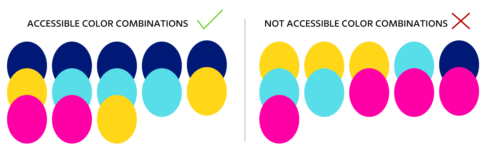

As an emerging Latina graphic designer, I’ve noticed that narratives about Latine and other BIPOC designers are often hard to find in one place. I’ve come across many wonderful sources, such as BIPOC Design History, AIGA Baltimore, the Society of Design Arts (SoDA) Latino Design Histories, and the People’s Graphic Design Archive. However, while exploring these resources, I encountered obstacles related to commitment, time, money, and context.
As a Latina design student who works full-time, has student loans, and is interested in learning more about designers with a similar background, I imagined what it would be like to overcome these obstacles. As a result, I began envisioning an accessible platform for design students that would collate and highlight the intersectionality of Latine and BIPOC designers' narratives. Below is the first design iteration of this project:

To address this gap, I am creating an open-source forum—MOSAICO—where users can both contribute to and discuss shared content. This platform collects and preserves the stories of Latine designers, making it easier for others like me to discover and connect with graphic designers from similar backgrounds.
Before designing MOSAICO, I felt it was necessary to establish a framework for how Latine Design narratives should be collated and delivered to audiences.
To effectively collate and share Latine design narratives on a platform like MOSAICO, it's important to move beyond the Western design canon. This will better represent the diverse design stories from Latin America and the diasporic Latine community. To achieve this, the information must be collected by and for the community, making MOSAICO an open-source platform.
The framework behind the MOSAICO project was informed by identifying the following:

You may have noticed that I mostly use Latine. For this project, I believe that Latine encompasses various identities and promotes an inclusive environment within our community. While no single term can cap- ture everyone's identity, and recognize that the discus- sion about terminology is complex and changing. Each person has the right to choose the term that resonates with them. As we learn, MOSAICO aims to grow and foster a welcoming community.

The color palette draws inspiration from the diverse traditions and cultures of Latin America. Below is a picture of various traditional dresses from different Latin American countries, showcasing how these vibrant colors are actively used. The following colors must be paired accordingly to ensure sufficient contrast for legibility and accessibility across the website.
The brand imagery of MOSAICO draws inspiration from mosaic art found in Latin America. This connection to Latin American art reflects my desire to learn more about my Mexican heritage and other Latin American cultures, with the goal of decolonizing the art and design canon.
MOSAICO is Spanish for "mosaic”, the practice of arranging small pieces of existing materials, such as tile, glass, or stone, to create a larger picture or pattern. With MOSAICO, I aim to utilize a similar practice by connecting the existing narratives of Latine graphic designers. The goal is to illustrate the diversity, intersectionality, and influence of the Latine community within the design field.

The MOSAICO brand captures a bold yet minimalist approach. The MOSAICO title is a geometric sans serif named Ofelia Display type. Ofelia was created by Brazilian Designer Daniel Sabino under the text foundry Blackletra. It is a contemporary, straightforward type that is complemented by a vibrant yet simple mosaic pattern.

The primary logo serves as a hero image for online platforms and merchandise. It can be formatted in black, white, brand colors, or a clipping masked image related to the content on the MOSAICO webpage. Do NOT don’t stretch, use unaffiliated brand colors, and/or rotate logo.
I specifically picked types that came from Foundries that aligned with Latine origins and designers. Brother 1816 is from TipoType Foundry, created by Uruguayan designers Fernando Díaz and Ignacio Corbo.

Petala Pro is from Typefolio, an independent Brazilian typefoundry established by the designer Marconi Lima.

Basic Sans is created by Daniel Hernández and is from Latinotype is a Chilean independent type foundry established in 2008. Latinotype specializes in the design of high-quality typefaces, which are an expression of their Latin American identity.


Conducted feedback sessions with Latine design professionals to gather insights on the proof of concept and how to further develop MOSAICO.
I met with Ana Llorente, a Latina graphic designer and educator from San Francisco and Los Angeles who specializes in collaborative learning experiences and has taught Cuban Graphic Design through BIPOC DESIGN HISTORY. We connected via Zoom after Lafe's introduction, given her expertise in Design in Context.
Ana recommended valuable resources like the People's Graphic Design Archive and are.na. She also provided additional critiques, such as:
She encouraged me to apply the identity system cohesively across different media, think beyond conventional approaches, and embrace more experimental design inspired by references like the 1968 Mexico Olympics.
The feedback session with Ramon Tejada, a DominicanYork designer and educator who serves as Associate Professor and Department Head in Graphic Design at RISD, provided valuable insights for the MOSAICO project. Ramon, a 2024 Vilcek Prize recipient with expertise in collaboration and inclusion through his "puncturing" practice, offered guidance on decolonizing design approaches for the project, such as:
He also shared resources for typography, website building, and examples of similar projects, concluding that Latin design's fluid and maximalist nature should inspire breaking free from Western design constraints to create a structure that authentically represents Latino narratives.
In addition to exploring how narratives can be interconnected using a mosaic to reveal patterns. What would it be like to catalogue these narratives, finding intersectional traits among them to create a larger picture? You can find some Latine Design Narratives I have collected as examples and will be referring to for the second iteration here.